- Luodaan käyttäjäryhmä, joka automaattisesti myöntää superkäyttäjän oikeudet siihen kuuluville. Helpottaa mm. Ansiblen sekä järjestelmän käyttöä.
- Sudo-komennon "rikkominen" estää myös sen korjaamisen. Artikkelissa jätetään root-käyttäjä avattuna taustalle, jotta siihen voidaan palata jos jokin menee vikaan.
- Sudo-komentoa vastaan on turha pullikoida.
Ansiblella automatisoidaan:
Tärkeä sääntö: Ensin manuaalisesti, sitten automatisoidusti. Näin vältetään turhat virheet.
- Kopioi tiedoston tai hakemiston kohdelaitteeseen. Tarvittaessa moduuli siirtää myös tiedoston/hakemiston meta-tiedot (oikeudet, omistajuus, jne.) kohteeseen.
Esimerkki tiedoston "foo.conf" kopioimisesta hakemistosta "/srv/myfiles/foo.conf" hakemistoon "/etc/". Tiedoston omistajalle (foo) sekä käyttäjäryhmälle (foo) asetetaan oikeudet '0644' (-rw-r--r--)
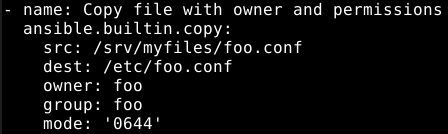
- Hallinnoi paketinhallinnan paketteja.
- Esimerkki Apachen asentamisesta. "state: present" on tosin oletus, joten sen voi jättää pois ellei pakettia haluta päivittää (state: latest), tai poistaa (state: absent)
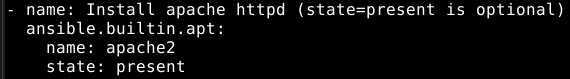
- Hallinnoi tiedostoja, hakemistoja ja linkkejä, sekä tarvittaessa niitten oikeuksia.
- Esimerkki tiedoston omistajuuden, ryhmän ja oikeuksien muuttamisesta. '0644' (luku- ja kirjoitusoikeus omistajalle ja pelkkä lukuoikeus muille käyttäjille
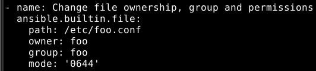
- Hallinnoi käyttäjiä sekä niitten ominaisuuksia.
- Esimerkissä luodaan käyttäjä (johnd) sekä kotihakemisto (create_home: yes)
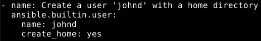
- Lisää tai poistaa julkisen avaimen käyttäjän "authorized_key" - tiedostosta
Esimerkki julkisen avaimen hakemisesta lokaalin koneen hakemistosta (/home/käyttäjä/.ssh/id_rsa.pub)
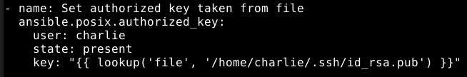
Aloitin luomalla uuden ryhmän superkäyttäjille (sudo groupadd sudoless), uuden käyttäjän Ansiblea varten (sudo adduser piipoble), sekä lisäämällä tämän käyttäjän ryhmään (sudo adduser piipoble sudoless).
Seuraavaksi lisäsin "sudoless" - tiedoston hakemistoon /etc/sudoers.d/ (sudo nano /etc/sudoers.d/sudoless), ja tähän sääntörivi "%sudoless ALL = (ALL) NOPASSWD: ALL" jotta ryhmän käyttäjät pääsevät toteuttamaan tiettyjä komentoja ilman jatkuvaa salasanan syöttämistä.
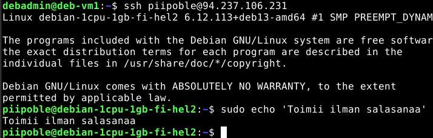
Lopuksi vielä kopioin omat SSH-avainparit omalta käyttäjältä, jotta kirjautuminen toimisi ilman salasanaa mutkattomasti. Eli ensin yhteys: "ssh piipo@osoite" ja sitten "sudo cp ~/.ssh/authorized_keys /home/piipoble/.ssh/ "
Seuraavaksi toteutettiin sama automatisoituna Ansiblella, osittain käyttäen apuna ohjeistusta (https://terokarvinen.com/passwordless-sudo-with-ansible/)
Eli muokkasin site.yml - tiedostoa lisäten sinne uuden käyttäjäni roolin, sekä "become: true" - kohdan jotta Ansible yrittää toteuttaa tehtävät sudona.
Jotta voitaisiin kokeilla toimivuutta ensin, kommentoin pois hosts.ini - tiedostosta SSH:lla yhdistämisen omaan palvelimeen.
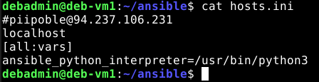
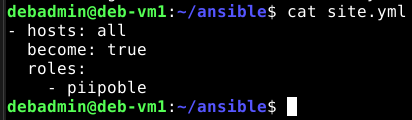
Lopuksi vielä uusi hakemisto roolille "piipoble" (mkdir ~/ansible/roles/piipoble/tasks -p) ja sinne uusi main.yml - tehtävätiedosto, johon seuraavanlainen rimpsu:
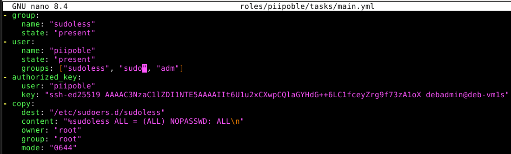
Sitten testiajo komennolla (ansible-playbook site.yml -K), salasanan syöttö ja tulosteen perusteella (ok=6, changed=5) tehtävä onnistui. Varmistin asian tarkistamalla käyttäjän ryhmät (groups piipoble), sekä muodostamalla SSH-yhteyden (ssh piipoble@localhost)
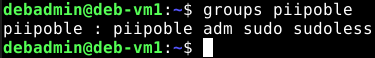
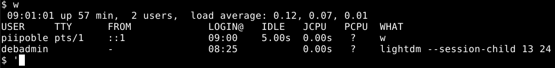
Muokkasin piipoble-roolin tehtävätiedostoa sekä site.yml - tiedostoa seuraavanlaisesti:
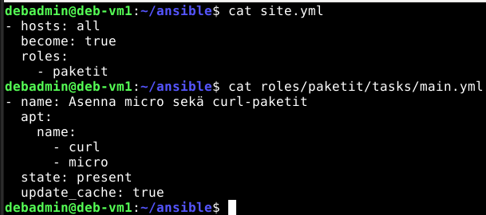
Testiajo samalla komennolla kuin aikaisemmin, ja Ansible tulosti virheet:
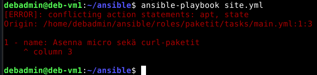
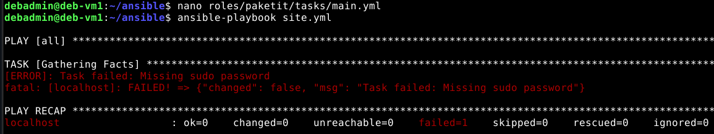
Tämäkin korjattiin muokkaamalla sisennystä (site.yml) ja lisäämällä "-K" sudoa varten testikomentoon (ansible-playbook site.yml -K). Tehtävän onnistuminen varmistettiin näin:
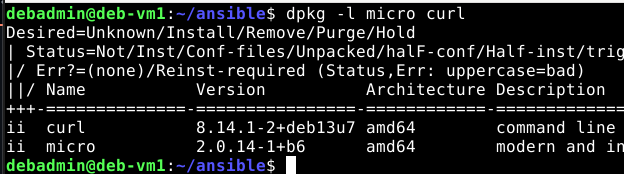
"ii" rivin alussa tarkoittaa asennettua. Ajettuani komennon uudestaan, mikään ei ollut muuttunut (ok=2, changed=0)
Loin uuden roolin "tiedstt", ja sille oman tehtävätiedoston (roles/tiedstt/tasks/main.yml), johon lisäsin tarvittavat komennot. Lisäsin roolin "roles: " - listaan (site.yml) ja tein testiajon (ansible-playbook site.yml)
Tehtävä onnistui, ja ajoin sen toisen kerran nähdäkseni onko idempotentti. Oikeudet olivat "-rw-r--r-- 1 debadmin sudoless 110", kuten kuuluukin.
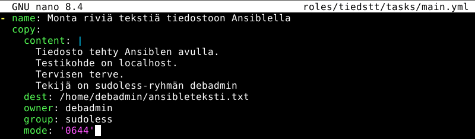
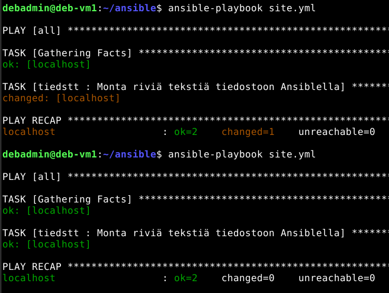
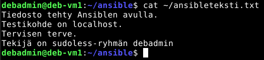
Hyödynsin tässä Ansiblen virallista moduulidokumentaatiota (Linkki) ja lisäsin ansibleteksti.txt - tiedostoon rivin.
Tämä onnistui lisäämällä "lineinfile: " - kohta tehtävälistaan, osoittamalla sille kohde (path: ) ja lisättävä tekstirivi (line: )
Jotta muutoksia ei tehtäisi jatkuvasti uudestaan, tarkistaa Ansible onko rivi jo suorittamisen jälkeen olemassa (state: present)
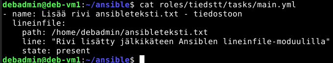
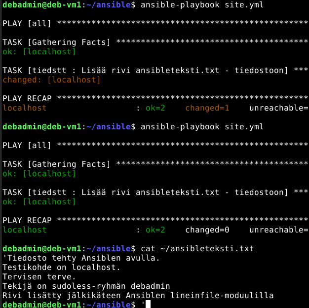
Karvinen, T. 2026: Sudo without password | Luettavissa: Linkki | Luettu 10.11.2026
Karvinen, T. Passwordless Sudo with Ansible | Luettavissa: Linkki | Luettu 10.11.2026
Ansible Community Documentation - ansible.builtin.copy module | Luettavissa: Linkki | Luettu 10.11.2026
Ansible Community Documentation - ansible.builtin.apt module | Luettavissa: Linkki | Luettu 10.11.2026
Ansible Community Documentation - ansible.builtin.user module | Luettavissa: Linkki | Luettu 11.11.2026
Ansible Community Documentation - ansible.posix.authorized_key module | Luettavissa: Linkki | Luettu 11.11.2026
Ansible Community Documentation - ansible.builtin.file module | Luettavissa: Linkki | Luettu 11.11.2026